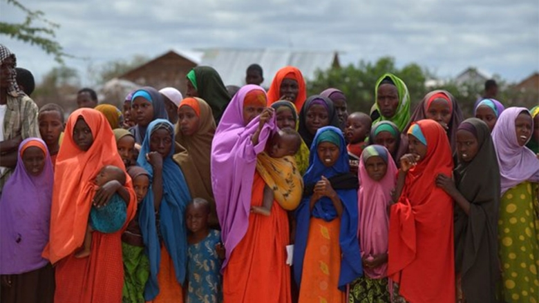

Formation
Formation en gestion financière pour les G.I.E
Programme de renforcement des capacités en gestion financière pour les membres des G.I.E de Keur Massar.
Lire la suiteDécouvrez l'impact de notre réseau à Keur Massar
Connectez-vous avec les acteurs locaux
Localisez les initiatives près de chez vous
Restez informé des dernières nouvelles
Restez informé des dernières nouvelles de notre communauté
Programme de renforcement des capacités en gestion financière pour les membres des G.I.E de Keur Massar.
Lire la suiteUn nouveau projet d'agriculture urbaine vient d'être lancé à Keur Massar avec le soutien de nos partenaires.
Lire la suiteSignature d'un partenariat stratégique pour le développement des activités économiques à Keur Massar.
Lire la suite